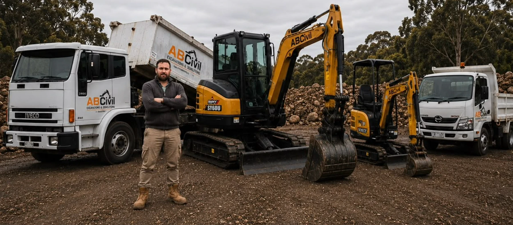

15+ Years’ Experience
Practical industry knowledge built across a wide range of excavation and civil works.
About ABCivil Excavations
ABCivil Excavations is an owner-led excavation and civil works business focused on practical service, reliable delivery and doing the work properly from start to finish.
Industry experience across excavation, earthworks, demolition and site preparation.
Who we are

ABCivil Excavations is led by Nicolas, who brings more than 15 years of industry experience to a wide range of residential, commercial and civil projects.
From excavation and earthworks through to demolition, trenching and site preparation, ABCivil takes a hands-on approach to every project. Nicolas remains closely involved in the business, while machinery is operated by experienced, appropriately certified personnel to ensure work is carried out safely, efficiently and with a clear understanding of the site.
The focus is simple: communicate clearly, do the work properly and leave the site ready for what comes next.
What matters to us
Practical industry knowledge built across a wide range of excavation and civil works.
Nicolas remains closely involved in the business, supported by experienced and appropriately certified operators on site.
Clear communication, careful planning and a reliable approach from quote to completion.
Need excavation or civil works support?
Whether you’re planning a site cut, demolition, trenching or general earthworks, we’re happy to discuss the job and the next steps.